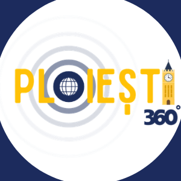

HUB-UL ORAȘULUI TĂU
Explorează Ploieștiul
la 360°
Atracții, clădiri istorice, restaurante, cafenele, parcuri, evenimente și știri din Ploiești.
HUB-UL ORAȘULUI TĂU
Atracții, clădiri istorice, restaurante, cafenele, parcuri, evenimente și știri din Ploiești.

PLOIEȘTI 360